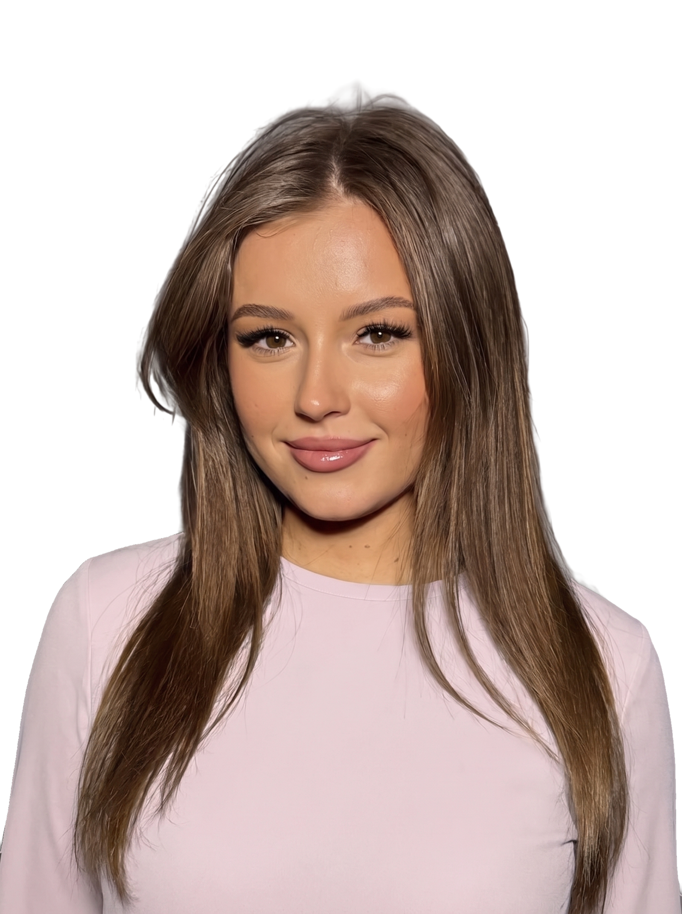
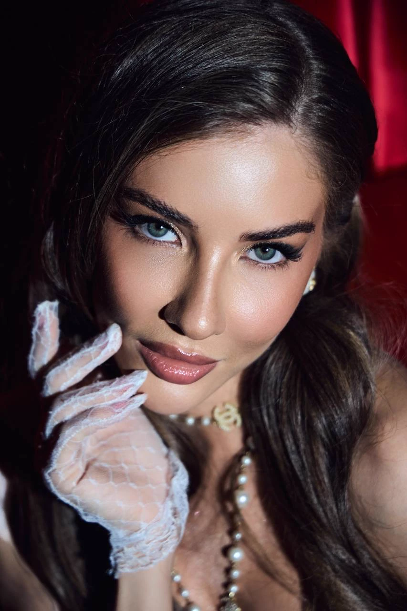
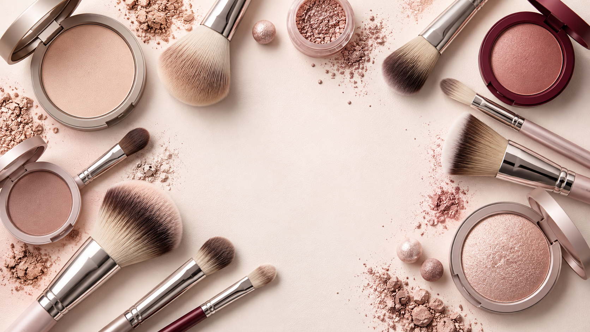

Makeup & Brow Artist
ALLA
ORISHKO
Natural beauty.
Precise details.

↓Behind the work
The detail starts
before the camera.
Quiet preparation, precise tools and a finish that stays true to the person.
The approach
Makeup should reveal the person — never cover her.
Polished skin, expressive features and a finish made for real life and the camera.

Colour & texture
Quiet confidence.
Considered colour.
Selected work
Beauty,
precisely considered.
Skin first.
Detail always.
Artist's eye
Texture, tone,
balance.
Every detail is chosen to belong to the face, the light and the moment.

Expertise